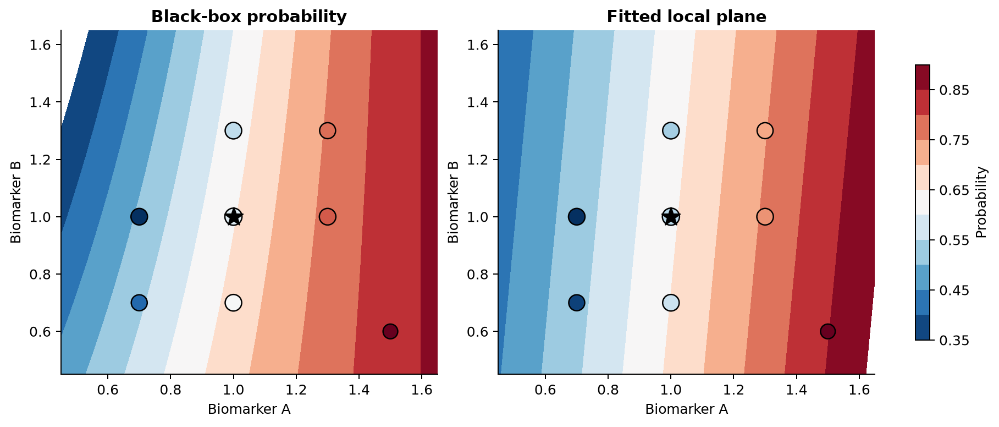

3 How LIME works
3.1 Begin with an already fitted prediction function
Let the fitted prediction function be denoted by
\[\hat f.\]
The hat is a reminder that the function has already been estimated from training data. LIME begins after this fitting step. It does not estimate or alter the original model.
Let the observation to be explained be a vector with \(p\) predictors,
\[x_0 = (x_{01},x_{02},\ldots,x_{0p}).\]
For regression, the original model’s prediction at this observation is the numerical value
\[\hat f(x_0).\]
For classification, an explanation must be attached to a class. If \(c\) is the class of interest, define
\[\hat f_c(x_0) = P_{\hat f}(Y=c\mid x_0).\]
The notation means the probability assigned to class \(c\) by the fitted model. It is not a claim that the fitted probability is the true biological probability.
3.2 The response of the explanation model
LIME creates a new local modelling problem. Its inputs are artificial observations and its responses are predictions from \(\hat f\). The mapping is
\[Z \longrightarrow \hat f(Z),\]
not
\[Z \longrightarrow Y.\]
For a classifier and class \(c\), the response attached to artificial observation \(z_i\) is
\[y_i^* = \hat f_c(z_i).\]
The star distinguishes this generated response from an outcome observed in nature. It is a continuous value such as 0.72 or 0.91. For regression,
\[y_i^* = \hat f(z_i).\]
This construction resolves an apparent mismatch. A classifier was fitted to class outcomes, yet a linear regression appears inside LIME. The regression is not being fitted to the original class labels. It is approximating a surface of predicted probabilities.
3.3 Artificial observations
Generate \(m\) perturbed observations around the explanation problem,
\[z_1,z_2,\ldots,z_m.\]
Each \(z_i\) has \(p\) feature values. The first row in common implementations is \(x_0\) itself. The remaining rows are random modifications.
The word around needs care. It does not necessarily mean that every value was sampled from a distribution centered on \(x_0\). Python LIME without discretization normally draws each continuous feature independently from a standard normal and converts it using the training mean and standard deviation. sample_around_instance=True changes the center to the explained value. With default discretization, it samples training-bin frequencies. Current R lime samples training-bin frequencies by default. Without binning, it uses a separate density estimate for each continuous column by default.
Categorical predictors are sampled using their training frequencies in both implementations. The generated columns are therefore generally independent conditional on the package’s marginal summaries. Relationships among predictors need not be preserved.
3.4 Model and interpretable representations
The original LIME framework distinguishes a model representation \(z_i\) from an interpretable representation \(z_i'\). The black box receives \(z_i\). The surrogate receives \(z_i'\).
For a numerical tabular model, both representations may contain the same continuous measurements. With discretization, however, a measured biomarker value in \(z_i\) can become an indicator in \(z_i'\) such as
\[z_{ij}' = \begin{cases} 1, & \text{if biomarker A is in the interval }(0.6,1.4],\\ 0, & \text{otherwise.} \end{cases}\]
For text, an element of \(z_i'\) can indicate whether a word is present. For an image, it can indicate whether a superpixel is visible. The distinction allows the fitted model to use the representation it requires while the explanation uses features a person can read.
The rest of the main derivation writes \(z_i\) for the surrogate input to keep the notation light. If a separate interpretable representation is used, every occurrence of \(z_i\) in the surrogate design matrix should be read as \(z_i'\) instead.
3.5 Distance defines the neighborhood
For every perturbation, calculate a distance from the explained observation,
\[d(x_0,z_i).\]
Raw Euclidean distance is
\[d(x_0,z_i) = \sqrt{\sum_{j=1}^p (x_{0j}-z_{ij})^2}.\]
This expression is dominated by features with large numerical scales. An age measured in years can vary by tens while a normalized gene-expression value varies by one or two. The units, rather than the model’s local behaviour, would determine what counts as nearby.
For continuous features, a common correction is to standardize each difference using a training-set scale \(s_j\):
\[d_{\mathrm{scaled}}(x_0,z_i) = \sqrt{ \sum_{j=1}^p \left( \frac{x_{0j}-z_{ij}}{s_j} \right)^2 }.\]
Python tabular LIME uses standardized interpretable data before its default Euclidean distance. A categorical feature is represented as one when it matches the explained value and zero otherwise. A discretized continuous feature is treated in the same match-versus-not-match form.
Datasets containing both numerical and categorical predictors need a distance that can combine unlike types. Gower distance calculates a feature-level dissimilarity between zero and one, scaling numerical differences by their training ranges and using match or mismatch for categorical values, then averages across available features. Current R lime uses Gower distance by default. This is an implementation choice, not part of the universal definition of LIME.
3.6 Distance becomes locality weight
A locality kernel turns distance into an influence weight. A useful conceptual form is
\[\pi_{x_0}(z_i) = \exp\left( -\frac{d(x_0,z_i)^2}{\sigma^2} \right),\]
where \(\sigma>0\) is the kernel width. When \(d=0\), the weight is one. The weight decreases toward zero as distance grows. A small \(\sigma\) gives appreciable weight only to close perturbations. A large \(\sigma\) lets a broader region influence the surrogate.
The released Python implementation and the non-Gower path in current R lime use
\[\pi_{x_0}(z_i) = \sqrt{ \exp\left(-\frac{d(x_0,z_i)^2}{\sigma^2}\right) } = \exp\left(-\frac{d(x_0,z_i)^2}{2\sigma^2}\right).\]
The default Python width is
\[\sigma = 0.75\sqrt{p}.\]
For R’s default Gower path, let \(d_G\) be Gower distance and let \(q\) be gower_pow. Similarity is
\[\pi_{x_0}(z_i)=1-d_G(x_0,z_i)^q.\]
kernel_width is not used on that path. These exact formulas explain why changing the same-looking argument across languages does not necessarily create the same neighborhood.

3.7 The local surrogate as weighted regression
Take a linear surrogate from a class \(G\) of interpretable models:
\[g(z_i) = \beta_0+\beta_1z_{i1}+\cdots+\beta_pz_{ip}.\]
The coefficients are chosen to minimize locally weighted squared error,
\[\sum_{i=1}^{m} \pi_{x_0}(z_i) \left[y_i^*-g(z_i)\right]^2.\]
For regression, substituting the generated response gives
\[\sum_{i=1}^{m} \pi_{x_0}(z_i) \left[\hat f(z_i)-g(z_i)\right]^2.\]
For classification and class \(c\), it becomes
\[\sum_{i=1}^{m} \pi_{x_0}(z_i) \left[\hat f_c(z_i)-g(z_i)\right]^2.\]
Each term compares a black-box output with a surrogate output on the same artificial row. Squaring prevents positive and negative errors from cancelling. Multiplying by \(\pi_{x_0}(z_i)\) makes a mistake close to \(x_0\) more costly than the same mistake far away.
3.8 Matrix form
Put the \(m\) surrogate inputs into a design matrix with a column of ones for the intercept:
\[Z= \begin{bmatrix} 1 & z_{11} & \cdots & z_{1p}\\ 1 & z_{21} & \cdots & z_{2p}\\ \vdots & \vdots & \ddots & \vdots\\ 1 & z_{m1} & \cdots & z_{mp} \end{bmatrix}.\]
Collect the generated responses in
\[\mathbf y^*= \begin{bmatrix} \hat f(z_1)\\ \hat f(z_2)\\ \vdots\\ \hat f(z_m) \end{bmatrix}\]
for regression, or replace \(\hat f\) with \(\hat f_c\) for classification. Put the locality weights on the diagonal of
\[W=\operatorname{diag}(w_1,w_2,\ldots,w_m), \qquad w_i=\pi_{x_0}(z_i).\]
The weighted objective is compactly
\[(\mathbf y^*-Z\beta)^\top W(\mathbf y^*-Z\beta).\]
Differentiating with respect to \(\beta\), setting the result to zero, and solving gives the weighted least-squares estimate
\[\hat\beta = (Z^\top WZ)^{-1}Z^\top W\mathbf y^*.\]
\(Z^\top WZ\) summarizes the weighted geometry of the artificial predictors. \(Z^\top W\mathbf y^*\) summarizes their weighted relationship with the black-box outputs. The inverse maps those summaries into the coefficient vector.
Ridge regression stabilizes the solution when columns are correlated or information is weak. Let
\[P=\operatorname{diag}(0,1,\ldots,1)\]
so the intercept is not penalized. The solution becomes
\[\hat\beta = (Z^\top WZ+\lambda P)^{-1}Z^\top W\mathbf y^*.\]
Both packages use ridge regression for the final common tabular surrogate, though their scaling and regularization details differ.
3.9 Explanation complexity and feature selection
A local model using all \(p\) features may be faithful but not interpretable. The general LIME objective expresses both requirements:
\[\xi(x_0) = \arg\min_{g\in G} \mathcal L(\hat f,g,\pi_{x_0}) + \Omega(g).\]
Every component has now been constructed. \(x_0\) is the observation being explained. \(G\) is the class of permitted interpretable models. \(\mathcal L\) is the loss measuring how poorly \(g\) reproduces \(\hat f\) under locality weights \(\pi_{x_0}\). \(\Omega(g)\) measures or constrains explanation complexity. \(\xi(x_0)\) is the selected explanation.
Packages commonly implement complexity by requesting at most \(K\) features and choosing them before the final ridge fit. The practical strategies include:
Forward selection. Start empty and add the feature that most improves weighted regression fit at each step.
Highest weights. Fit a ridge model using all features and retain features with the largest weighted coefficient criterion.
Lasso path. Follow a sparse regression path and choose features that persist as regularization changes.
No selection. Use every feature and ignore the requested maximum.
The auto setting in both packages uses forward selection when \(K\leq6\) and a highest-weights strategy when \(K>6\). R also offers a tree-based selection option. These are algorithms for constructing a sparse approximation to the general objective. They are not mathematically identical ways of solving one fixed penalty.
3.10 A complete numerical example
Consider two standardized biomarkers and the observation
\[x_0=(1.0,1.0).\]
For this example, let’s say the black-box class probability is
\[\hat f_1(z) = \frac{1}{1+\exp[-(-0.5+1.4z_1-0.8z_2+0.5z_1z_2)]}.\]
The interaction \(z_1z_2\) makes the function nonlinear. Generate eight rows, including \(x_0\), use Euclidean distance, and set the conceptual kernel width to one:
\[w_i=\exp[-d(x_0,z_i)^2].\]
| \(i\) | \(z_{i1}\) | \(z_{i2}\) | \(\hat f_1(z_i)\) | distance | weight |
|---|---|---|---|---|---|
| 1 | 1.0 | 1.0 | 0.6457 | 0.0000 | 1.0000 |
| 2 | 0.7 | 1.0 | 0.5075 | 0.3000 | 0.9139 |
| 3 | 1.3 | 1.0 | 0.7631 | 0.3000 | 0.9139 |
| 4 | 1.0 | 0.7 | 0.6660 | 0.3000 | 0.9139 |
| 5 | 1.0 | 1.3 | 0.6248 | 0.3000 | 0.9139 |
| 6 | 0.7 | 0.7 | 0.5412 | 0.4243 | 0.8353 |
| 7 | 1.3 | 1.3 | 0.7549 | 0.4243 | 0.8353 |
| 8 | 1.5 | 0.6 | 0.8278 | 0.6403 | 0.6637 |
The table can be reproduced from numerical_example.csv. For row 2, for example,
\[d(x_0,z_2) = \sqrt{(1.0-0.7)^2+(1.0-1.0)^2} =0.3,\]
and
\[w_2=\exp(-0.3^2)=0.9139.\]
With an intercept and the two biomarkers, the weighted cross-products are
\[Z^\top WZ = \begin{bmatrix} 6.9899 & 7.3217 & 6.7245\\ 7.3217 & 8.1343 & 7.0739\\ 6.7245 & 7.0739 & 6.8800 \end{bmatrix}\]
and
\[Z^\top W\mathbf y^* = \begin{bmatrix} 4.6185\\ 5.0169\\ 4.4411 \end{bmatrix}.\]
Substitution into the weighted least-squares solution gives
\[\hat\beta = \begin{bmatrix} 0.2873\\ 0.3873\\ -0.0335 \end{bmatrix}.\]
The local surrogate is therefore
\[g(z)=0.2873+0.3873z_1-0.0335z_2.\]
At the explained observation,
\[g(x_0)=0.2873+0.3873-0.0335=0.6411.\]
The black-box probability is 0.6457, so the local prediction differs by about 0.0046. Across the eight weighted rows, the local \(R^2\) is 0.9869. In this constructed neighborhood the plane is a strong approximation.

The positive coefficient for biomarker A says that, within this weighted artificial neighborhood and holding the surrogate’s biomarker B coordinate fixed, larger A is associated with a larger approximation to the black-box probability. The small negative coefficient for biomarker B has the same restricted meaning. Neither is a biological intervention effect.
3.11 Linear regression can approximate probability output
The black-box function \(\hat f_c(z)\) can be nonlinear while
\[\hat f_c(z)\approx g(z)\]
holds in a weighted neighborhood. LIME never requires
\[\hat f_c(z)=g(z)\]
over the full predictor space.
A linear surrogate can produce values below zero or above one if evaluated far from its fitting neighborhood. This does not make it a calibrated probability model. It is an explanatory approximation that should not be used as a replacement classifier. Ordinary logistic regression is not required because the training targets of the surrogate are continuous probabilities, not binary outcomes.
3.12 The surrogate is not a Taylor approximation
A local line can resemble a tangent, but ordinary LIME does not compute the gradient of \(\hat f\) at \(x_0\). It samples a neighborhood, evaluates the fitted model, weights rows by proximity, selects features, and estimates a regression. Its coefficients depend on the sampled distribution and kernel, not only on derivatives at one point.
This distinction matters for random forests and boosted trees. Their prediction surfaces are piecewise constant and may not have a conventional smooth derivative at a split. LIME can still fit a surrogate across nearby sampled regions.
3.13 Local fidelity
Define the weighted mean of the generated responses as
\[\bar y_w^* = \frac{\sum_{i=1}^{m}w_i y_i^*}{\sum_{i=1}^{m}w_i}.\]
A weighted local coefficient of determination is
\[R^2_{\mathrm{local}} = 1- \frac{ \sum_{i=1}^{m}w_i[y_i^*-g(z_i)]^2 }{ \sum_{i=1}^{m}w_i[y_i^*-\bar y_w^*]^2 }.\]
The numerator is the surrogate’s weighted squared error. The denominator is the weighted error from predicting the same constant for every perturbation. Values near one indicate that the surrogate reproduces most of the local variation. A value near zero means it is little better than the weighted mean. A negative value is possible when it is worse.
model_r2 in R and score in the released Python package report the local regression’s weighted \(R^2\). They are in-sample measures on artificial observations. They assess approximation within the generated neighborhood, not predictive accuracy on real held-out outcomes.
Two checks complement each other:
\[R^2_{\mathrm{local}}\]
assesses the neighborhood as a whole, while
\[|g(x_0)-\hat f_c(x_0)|\]
checks the surrogate specifically at the observation being explained. A good explanation should not ignore either.
3.14 Kernel width changes the estimand
Suppose three widths are used with the same black box and \(x_0\):
\[\sigma_1<\sigma_2<\sigma_3.\]
They produce three different weight matrices,
\[W^{(1)},W^{(2)},W^{(3)},\]
and therefore three coefficient estimates,
\[\hat\beta^{(k)} = (Z^\top W^{(k)}Z+\lambda P)^{-1} Z^\top W^{(k)}\mathbf y^*.\]
The coefficient can change magnitude or sign because each width emphasizes a different part of a nonlinear surface. This is more than a software nuisance. The meaning of local is part of the question being answered. A narrow width can also produce a small effective sample size, making the fit unstable. A wide width can improve numerical stability while reducing locality.
3.15 Sampling and instability
Random perturbation produces a different design matrix on each run,
\[Z^{(1)},Z^{(2)},Z^{(3)},\ldots\]
The black-box responses, distances, selected features, and fitted coefficients consequently change:
\[\hat\beta^{(1)},\hat\beta^{(2)},\hat\beta^{(3)},\ldots\]
Increasing \(m\) usually reduces this Monte Carlo variation. Setting a seed selects one reproducible \(Z^{(r)}\). It does not show that another plausible perturbation sample would give the same explanation. Stability is assessed by repeating the complete process and comparing selected features, signs, magnitudes, local predictions, and fidelity.
3.16 Correlated predictors and the data manifold
Suppose two biomarkers satisfy approximately
\[X_2=X_1+\varepsilon,\]
where \(\varepsilon\) is small. Observed rows occupy a narrow band. If the perturbation scheme samples the two columns independently, it generates combinations with high \(X_1\) and low \(X_2\), or the reverse, even though these combinations were absent from training.

The black box is then evaluated where it has little empirical support. The resulting responses \(\hat f(z_i)\) can reflect arbitrary extrapolation. At the same time, columns of \(Z\) are nearly redundant in plausible regions. Several coefficient vectors can give similar predictions, and sparse selection may alternate between the two biomarkers.
A conditional perturbation generator can keep samples closer to the joint distribution, but it changes the explanation procedure and requires another model for that distribution. Grouping related predictors changes the unit of explanation. Neither choice is neutral. The important point is to state the neighborhood actually used and test its consequences.
3.17 High-dimensional data
When \(p\) is large, several parts of the construction become difficult.
First, Euclidean distances tend to concentrate. In many high-dimensional distributions, the difference between typical near and far distances becomes small relative to the mean distance. A kernel then has difficulty separating clearly local from distant rows.
Second, biological predictors are often strongly correlated. Independent marginal perturbation moves increasingly far from the joint data manifold as more coordinates are changed.
Third, selecting \(K\) features from thousands becomes a variable-selection problem with substantial sampling variability. A short list may look decisive even when many correlated lists fit almost equally well.
Fourth, computation grows. Each of \(m\) perturbations must be transformed and passed through \(\hat f\), and feature selection may repeatedly fit weighted models.
These points do not prove that LIME is invalid when \(p\) is large. They imply that distance, perturbation plausibility, feature grouping, representation, stability, and fidelity need explicit investigation. Explaining pathway scores or fitted latent components can be more stable than explaining thousands of raw genes, but the biological meaning then belongs to those transformed features.